1. Global Solutions (Projetos Integrados)
Global Solution 1ECR 1_2022: Veículos Elétricos
Global Solution 1ECR 1_2022 - Guilherme Macario
Veículos elétricos costumam ser mais econômicos que veículos a combustão (gasolina, etanol ou diesel), também podemos considerar os custos com a manutenção e o apelo da sustentabilidade.
Desenvolver um programa em Python para calcular o consumo médio de um veículo elétrico e de um veículo a combustão de porte similar, realizando a comparação.
O programa também deverá perguntar ao usuário se ele gostaria de calcular o consumo novamente (repetição) antes de sua finalização, caso SIM, entrar com novos dados para o cálculo, caso NÃO, fechar o programa.
O usuário deverá inserir as informações de todas as variáveis de entrada, pois elas não são valores fixos definidos dentro do código.
Segue referência para auxiliá-los nos cálculos: https://canaltech.com.br/carros/carros-eletricos-saiba-calcular-o-consumo-medio-198023/
Bom trabalho a todos!
Link do Código:
Resolução:
def calcular_consumo():
cap_bateria_kwh = float(input("Capacidade bateria (kWh): "))
autonomia_ev_km = float(input("Autonomia EV (km): "))
tarifa_kwh = float(input("Tarifa energia (R$/kWh): "))
consumo_ev_km = cap_bateria_kwh / autonomia_ev_km
custo_ev_km = consumo_ev_km * tarifa_kwh
consumo_combustao_kml = float(input("Consumo Combustão (km/L): "))
preco_combustivel_l = float(input("Preço Combustível (R$/L): "))
custo_combustao_km = preco_combustivel_l / consumo_combustao_kml
distancia = float(input("Distância simulada da viagem (km): "))
total_ev = custo_ev_km * distancia
total_comb = custo_combustao_km * distancia
economia = total_comb - total_ev
print(f"\nCusto Total EV: R$ {total_ev:.2f}")
print(f"Custo Total Combustão: R$ {total_comb:.2f}")
if economia > 0:
print(f"Economia EV: R$ {economia:.2f} ({((economia/total_comb)*100):.1f}%)")
while True:
calcular_consumo()
if input("\nNovo cálculo? (S/N): ").strip().upper() != 'S':
breakGlobal Solution 2/2022: Locação de Frota de Veículos Elétricos
Desenvolver um programa em Python para gerenciamento e tarifação de locação de frota de veículos elétricos por categoria (Caminhão, Furgão, Picape, SUV, Hatchback, Sedan), realizando leitura de base de dados externa (
ListaDeCarros.txt), cálculo tarifário com base nas faixas de tempo e emissão de comprovante em arquivo (ResumoAluguel.txt).
Link do Código:
Resolução:
import os
carros = []
taxaPadrao = 0
with open("ListaDeCarros.txt", "r", encoding='utf-8') as arquivo:
carros = arquivo.read().split("\n")
print("Caminhão\n"
"Furgão\n"
"Picape\n"
"SUV\n"
"HATCHBACK\n"
"SEDAN\n")
escolha = input("Escolha uma categoria carro elétrico disponível:").upper()
while escolha != "CAMINHÃO" and escolha != "FURGÃO" and escolha != "PICAPE" and escolha != "SUV" and escolha != "HATCHBACK" and escolha != "SEDAN":
escolha = input("Digite uma das categorias (Caminhão, Furgão, Picape, SUV, Hatchback, Sedan):").upper()
if escolha == "CAMINHÃO":
taxaPadrao = 15.90
for caminhao in carros:
if caminhao.startswith("Caminhão"):
print(caminhao)
carro = input("Selecione um Caminhão:")
elif escolha == "FURGÃO":
taxaPadrao = 12.90
for furgao in carros:
if furgao.startswith("Furgão"):
print(furgao)
carro = input("Selecione um Furgão:")
elif escolha == "PICAPE":
taxaPadrao = 8.90
for picape in carros:
if picape.startswith("Picape"):
print(picape)
carro = input("Selecione uma Picape:")
elif escolha == "SUV":
taxaPadrao = 6.90
for SUV in carros:
if SUV.startswith("SUV"):
print(SUV)
carro = input("Selecione uma SUV:")
elif escolha == "HATCHBACK":
taxaPadrao = 4.90
for hatchback in carros:
if hatchback.startswith("Hatchback"):
print(hatchback)
carro = input("Selecione um Hatchback:")
elif escolha == "SEDAN":
taxaPadrao = 3.90
for sedan in carros:
if sedan.startswith("Sedan"):
print(sedan)
carro = input("Selecione um Sedan:")
os.system('cls')
print(f"\nAté 6 horas: R$ {taxaPadrao} mais R$ 0,70 (por minuto) \n"
f"A partir de 6 horas: R$ {taxaPadrao} mais R$ 0,40 (por minuto)\n"
f"A partir de 12 horas: R$ {taxaPadrao} mais R$ 0,30 (por minuto)\n"
f"A partir de 24 horas: R$ {taxaPadrao} mais R$ 0,20 (por minuto)\n"
f"A partir de 48 horas: R$ {taxaPadrao} mais R$ 0,18 (por minuto)\n")
horas = float(input("Quantas horas gostaria de utilizar o carro? "))
if horas > 0 and horas < 6:
preco = (horas * 60) * 0.7 + taxaPadrao
elif horas >= 6 and horas < 12:
preco = (horas * 60) * 0.4 + taxaPadrao
elif horas >= 12 and horas < 24:
preco = (horas * 60) * 0.3 + taxaPadrao
elif horas >= 24 and horas < 48:
preco = (horas * 60) * 0.2 + taxaPadrao
elif horas >= 48:
preco = (horas * 60) * 0.18 + taxaPadrao
print((f"O aluguel do carro elétrico {carro}, no período de {round(horas)}h, ficará no valor de R$%.2f."%preco))
print("Verifique o arquivo ResumoAluguel.txt")
with open("ResumoAluguel.txt", "a", encoding='utf-8') as arquivo:
arquivo.write(f"O aluguel do carro elétrico {carro}, no período de {round(horas)}h, ficará no valor de R$%.2f.\n"%preco)2. Provas Avaliativas Formais
🐍 Matéria: Programação em Python
Precificação da Gasolina Comum (Gasolina C)
Prova 1 - ECR - Guilherme Macario
Faça um programa para calcular o preço final da gasolina comum que chega no posto de combustível.
“As distribuidoras de combustível compram nas refinarias a gasolina tipo A. Atendendo à legislação brasileira, a gasolina vendida nos postos deve ser misturada com etanol anidro. Desta maneira, no preço que o consumidor paga está incluído o preço de realização da Petrobras, o custo do etanol (que é definido livremente pelos seus produtores) e os custos e as margens de comercialização das distribuidoras e dos postos revendedores, bem como todos os impostos devidos.” Fonte: Petrobras
Vamos admitir as seguintes informações e fórmulas:
− O usuário entrará com o preço por litro da gasolina tipo A na refinaria.
− O usuário entrará com o preço por litro do etanol anidro nas usinas produtoras.
− A gasolina tipo C (gasolina na bomba) é igual a 73% de gasolina tipo A mais 27% de etanol anidro.
valor_gasolinaC = valor_gasolinaA * 0.73 + valor_etanol_anidro * 0.27
− As distribuidoras que são responsáveis pela mistura da gasolina A e do etanol anidro, além da entrega aos postos, impactam no custo do preço do combustível em 5%.
valor_distribuidora = valor_gasolinaC * 0.05
− Os tributos federais são: CIDE (Contribuição de Intervenção no Domínio Econômico), PIS/PASEP (Programa de Integração Social/ Programa de Formação do Patrimônio do Servidor Público) e COFINS (Contribuição para o Financiamento da Seguridade Social), que correspondem a 20%.
valor_tributos_federais = (valor_gasolinaC + valor_distribuidora) * 0.2
− Os custos e lucros de distribuição e revenda é de aproximadamente 15%.
custos_lucros = (valor_gasolinaC + valor_distribuidora + valor_tributos_federais) * 0.15
− O imposto estadual o ICMS (Imposto sobre Circulação de Mercadorias e Serviços) corresponde a 25%.
icms = (valor_gasolinaC + valor_distribuidora + valor_tributos_federais + custos_lucros) * 0.25Para calcular o preço final da gasolina comum (gasolina C) que chega nos postos, segue a fórmula:
valor_gasolina_final = valor_gasolinaC + valor_distribuidora + valor_tributos_federais + icms + custos_lucrosVariáveis de entrada solicitadas ao usuário:
➢ Valor da gasolina tipo A por litro
➢ Valor do etanol anidro por litroVariáveis de saída para apresentar na tela:
➢ Valor da gasolina C
➢ Valor cobrado pela distribuidora
➢ Valor dos tributos federais (CIDE, PIS/PASEP e COFINS)
➢ Valor do ICMS
➢ Valor dos custos e lucros de distribuição e revenda
➢ Valor final da gasolinaEXEMPLO DE ENTRADA / EXEMPLO DE SAÍDA:
- Valor da gasolina tipo A por litro = R$ 3.86
- Valor do etanol anidro por litro = R$ 3.63
- Valor da gasolina C = R$ 3.80
- Valor cobrado pela distribuidora responsável pela mistura = R$ 0.19
- Valor total dos tributos federais (CIDE, PIS/PASEP e COFINS) = R$ 0.80
- Valor do ICMS = R$ 1.38
- Valor dos custos e lucros de distribuição e revenda = R$ 0.72
- Valor final da gasolina que chega no posto = R$ 6.88
Link do Código:
Resolução:
valor_gasolinaA = float(input("Digite o valor da gasolina tipo A por litro: R$ "))
valor_etanol_anidro = float(input("Digite o valor do etanol anidro por litro: R$ "))
valor_gasolinaC = (valor_gasolinaA * 0.73) + (valor_etanol_anidro * 0.27)
valor_distribuidora = valor_gasolinaC * 0.05
valor_tributos_federais = (valor_gasolinaC + valor_distribuidora) * 0.20
custos_lucros = (valor_gasolinaC + valor_distribuidora + valor_tributos_federais) * 0.15
icms = (valor_gasolinaC + valor_distribuidora + valor_tributos_federais + custos_lucros) * 0.25
valor_gasolina_final = valor_gasolinaC + valor_distribuidora + valor_tributos_federais + icms + custos_lucros
print(f"\nValor da gasolina C = R$ {valor_gasolinaC:.2f}")
print(f"Valor cobrado pela distribuidora responsável pela mistura = R$ {valor_distribuidora:.2f}")
print(f"Valor total dos tributos federais (CIDE, PIS/PASEP e COFINS) = R$ {valor_tributos_federais:.2f}")
print(f"Valor do ICMS = R$ {icms:.2f}")
print(f"Valor dos custos e lucros de distribuição e revenda = R$ {custos_lucros:.2f}")
print(f"Valor final da gasolina que chega no posto = R$ {valor_gasolina_final:.2f}")Fatura de Energia Elétrica Residencial (TUSD / TE)
Prova 1 - ECR - Guilherme Macario
Todo mês é feita a leitura do medidor de energia da sua residência para saber qual o consumo em kWh. O consumo mensal é calculado pela diferença entre a leitura do mês atual e a leitura do mês anterior.
Variáveis de entrada solicitadas ao usuário:
✓ Leitura anterior (kWh)
✓ Leitura atual (kWh)Variáveis de saída para apresentar na tela:
✓ Consumo do mês (kWh)
✓ TUSD
✓ TE
✓ PIS/PASEP
✓ COFINS
✓ CIP
✓ Total a pagar (R$)Considerando as tarifas abaixo com ICMS (Imposto sobre Circulação de Mercadorias e Serviços) = 25%, os tributos e o CIP (Contribuição para Custeio do Serviço de Iluminação Pública), calcule o valor cobrado pelo consumo mensal. Estamos desconsiderando a tarifa de Bandeira Tarifária.
TARIFAS ALÍQUOTA TUSD (Tarifa de Uso do Sistema de Distribuição de Energia Elétrica) 40,942% TE (Tarifa de Energia) 38,317% Para cálculo da TUSD e da TE, você usa as seguintes fórmulas:
TUSD = consumo do mês * (alíquota/100)TE = consumo do mês * (alíquota/100)PIS/PASEP = consumo do mês * (1.00/100)COFINS = consumo do mês * (4.62/100)CIP (Iluminação Pública) igual a R$ 24,01.Para cálculo do total a pagar, você usa a seguinte fórmula:
Total a pagar = TUSD + TE + PIS/PASEP + COFINS + CIPEXEMPLO DE ENTRADA / EXEMPLO DE SAÍDA:
- Leitura anterior (kWh) = 57521
- Leitura atual (kWh) = 57761
- Consumo do mês (kWh) = 240
- TUSD = R$ 98.26
- TE = R$ 91.96
- PIS/PASEP = R$ 2.40
- COFINS = R$ 11.09
- CIP = R$ 24.01
- Total a pagar (R$) = 227.72
Link do Código:
Resolução:
leitura_anterior = float(input("Digite a leitura anterior (kWh): "))
leitura_atual = float(input("Digite a leitura atual (kWh): "))
consumo_mes = leitura_atual - leitura_anterior
tusd = consumo_mes * (40.942 / 100.0)
te = consumo_mes * (38.317 / 100.0)
pis_pasep = consumo_mes * (1.00 / 100.0)
cofins = consumo_mes * (4.62 / 100.0)
cip = 24.01
total_pagar = tusd + te + pis_pasep + cofins + cip
print(f"\nConsumo do mês (kWh) = {consumo_mes:.0f}")
print(f"TUSD = R$ {tusd:.2f}")
print(f"TE = R$ {te:.2f}")
print(f"PIS/PASEP = R$ {pis_pasep:.2f}")
print(f"COFINS = R$ {cofins:.2f}")
print(f"CIP = R$ {cip:.2f}")
print(f"Total a pagar (R$) = {total_pagar:.2f}")Cálculo de Médias FIAP com Descarte de Menor Nota e Exame
Prova 2 - ECR - Guilherme Macario
Faça um programa para calcular a média final de uma disciplina.
Variáveis de entrada solicitadas ao aluno (as variáveis são numéricas do tipo inteiro):
• 1º semestre:
o Checkpoint 1
o Checkpoint 2
o Checkpoint 3
o Entregável 1
o Entregável 2
o Global Solutions
• 2º semestre:
o Checkpoint 1
o Checkpoint 2
o Checkpoint 3
o Entregável 1
o Entregável 2
o Global Solutions
• Exame (caso o aluno tenha ficado)Variáveis de saída para apresentar na tela:
✓ Média do 1º semestre
✓ Média do 2º semestre
✓ Média parcial do ano
✓ Média finalObservações:
• O programa deverá descartar a menor nota entre os três checkpoints, em cada semestre.
• O usuário deverá entrar com as notas de 0 a 100.
• As variáveis de saída não devem apresentar casas decimais.Fórmulas para serem calculadas em cada semestre:
Média do Project Checkpoint Challenge & Feedbacks = (Checkpoint 1 + Checkpoint 2 + Entregável 1 + Entregável 2) / 4
Média do semestre = Média do Project Checkpoint Challenge & Feedbacks * 0,4 + Global Solutions * 0,6Fórmula para a média parcial do ano:
Média parcial do ano = Média do 1º semestre * 0,4 + Média do 2º semestre * 0,6Condições:
− Se a média parcial do ano for maior igual a 60 pontos, o aluno está aprovado na disciplina (mostrar a mensagem aprovado e a nota da média final).
− Se a média parcial do ano for menor que 60 e maior igual a 40 pontos, o aluno está de exame. A nota para aprovação no exame é de acordo com a seguinte fórmula:
Nota para aprovação = 120 – Média parcial do ano
✓ Se a nota do exame for maior igual a nota para aprovação, calcular a nova média final, de acordo com a fórmula abaixo, mostrar a mensagem aprovação e a nota da média final:
Média final = (Exame + Média parcial do ano) / 2
✓ Se a nota do exame for menor que a nota para aprovação, mostrar a mensagem reprovado e a nota da média final.
− Se a média parcial do ano for menor que 40 pontos, o aluno está reprovado (mostrar a mensagem reprovado e a nota da média final).
Link do Código:
Resolução:
print("=== ENTRADA DE NOTAS DO 1º SEMESTRE ===")
cp1_1s = int(input("Checkpoint 1: "))
cp2_1s = int(input("Checkpoint 2: "))
cp3_1s = int(input("Checkpoint 3: "))
ent1_1s = int(input("Entregável 1: "))
ent2_1s = int(input("Entregável 2: "))
gs_1s = int(input("Global Solutions: "))
cps_1s = sorted([cp1_1s, cp2_1s, cp3_1s])
media_checkpoints_1s = (cps_1s[1] + cps_1s[2] + ent1_1s + ent2_1s) / 4.0
media_1s = (media_checkpoints_1s * 0.4) + (gs_1s * 0.6)
print("\n=== ENTRADA DE NOTAS DO 2º SEMESTRE ===")
cp1_2s = int(input("Checkpoint 1: "))
cp2_2s = int(input("Checkpoint 2: "))
cp3_2s = int(input("Checkpoint 3: "))
ent1_2s = int(input("Entregável 1: "))
ent2_2s = int(input("Entregável 2: "))
gs_2s = int(input("Global Solutions: "))
cps_2s = sorted([cp1_2s, cp2_2s, cp3_2s])
media_checkpoints_2s = (cps_2s[1] + cps_2s[2] + ent1_2s + ent2_2s) / 4.0
media_2s = (media_checkpoints_2s * 0.4) + (gs_2s * 0.6)
media_parcial = (media_1s * 0.4) + (media_2s * 0.6)
print(f"\nMédia 1º Semestre = {media_1s:.0f}")
print(f"Média 2º Semestre = {media_2s:.0f}")
print(f"Média Parcial = {media_parcial:.0f}")
if media_parcial >= 60:
print(f"Aprovado! Média Final = {media_parcial:.0f}")
elif media_parcial >= 40:
print("Aluno de EXAME!")
nota_aprovacao = 120 - media_parcial
exame = int(input(f"Digite a nota do Exame (mínimo necessário: {nota_aprovacao:.0f}): "))
media_final = (exame + media_parcial) / 2.0
if exame >= nota_aprovacao:
print(f"Aprovado com exame! Média Final = {media_final:.0f}")
else:
print(f"Reprovado no exame! Média Final = {media_final:.0f}")
else:
print(f"Reprovado direto! Média Final = {media_parcial:.0f}")Corretor Automático de Gabarito de Provas
Prova 3 - ECR - Guilherme Macario
Faça um programa para verificar a nota do estudante em uma avaliação com 10 questões de múltipla escolha. O programa deve perguntar a resposta de cada questão, comparar com o gabarito da avaliação e calcular a nota total (atribuir 1 ponto para cada resposta correta).
Gabarito da avaliação:
01 - A | 02 - B | 03 - C | 04 - D | 05 - E | 06 - E | 07 - D | 08 - C | 09 - B | 10 - AAntes da correção o programa deverá mostrar o gabarito da avaliação na tela.
O programa deverá executar, conforme exemplo abaixo:EXEMPLO DE ENTRADA / EXEMPLO DE SAÍDA:
Gabarito da avaliação: 01 - A 02 - B 03 - C 04 - D 05 - E 06 - E 07 - D 08 - C 09 - B 10 - A
Resposta da questão 1: A
Resposta da questão 2: C
Resposta da questão 3: C
Resposta da questão 4: D
Resposta da questão 5: E
Resposta da questão 6: E
Resposta da questão 7: D
Resposta da questão 8: C
Resposta da questão 9: B
Resposta da questão 10: A
A nota total é igual a 9 ponto (s).
Link do Código:
Resolução:
gabarito = ['A', 'B', 'C', 'D', 'E', 'E', 'D', 'C', 'B', 'A']
print("Gabarito da avaliação:")
for i, g in enumerate(gabarito):
print(f"{i+1:02d} - {g}", end=" ")
print("\n")
pontuacao = 0
for i in range(10):
resposta = input(f"Resposta da questão {i+1}: ").strip().upper()
if resposta == gabarito[i]:
pontuacao += 1
print(f"\nA nota total é igual a {pontuacao} ponto(s).")Caixa Registradora de Loja com Cálculo de Troco
Prova 3 - ECR - Guilherme Macario
Uma loja de conveniências necessita de um programa que implemente uma caixa registradora.
O programa deverá receber um número desconhecido de valores referentes aos preços dos produtos. Quando o valor 0 (zero) for digitado pelo operador, a compra será finalizada.
Após a finalização da compra, o programa deve mostrar o total da compra e perguntar o pagamento que o cliente forneceu, para então calcular e mostrar o valor do troco.
O programa deverá executar, conforme os valores do exemplo abaixo:
Observação: não esqueçam das casas decimais nas saídas.EXEMPLO DE ENTRADA / EXEMPLO DE SAÍDA:
- Valor do produto 1 (digite 0 para finalizar a compra) = R$ 78
- Valor do produto 2 (digite 0 para finalizar a compra) = R$ 54
- Valor do produto 3 (digite 0 para finalizar a compra) = R$ 10
- Valor do produto 4 (digite 0 para finalizar a compra) = R$ 33
- Valor do produto 5 (digite 0 para finalizar a compra) = R$ 0
- Total da compra = R$ 175.00
- Valor do pagamento = R$ 200
- Troco = R$ 25.00
Orientações: zipar os dois arquivos com o número do seu RM e postar no Portal do Aluno em entrega de trabalhos.
Link do Código:
Resolução:
total_compra = 0.0
contador = 1
while True:
preco = float(input(f"Valor do produto {contador} (0 para finalizar) = R$ "))
if preco == 0:
break
total_compra += preco
contador += 1
print(f"\nTotal da compra = R$ {total_compra:.2f}")
pagamento = float(input("Valor do pagamento = R$ "))
print(f"Troco = R$ {pagamento - total_compra:.2f}")Jogo Jokenpô Automatizado com Placar
Prova 4 - ECR - Guilherme Macario
O Jokenpô é um jogo em que as pessoas jogam com as mãos, escolhendo pedra, papel ou tesoura. Funciona assim: a tesoura corta o papel, mas quebra com a pedra; o papel embrulha a pedra, mas é cortado pela tesoura e a pedra quebra a tesoura e é embrulhada pelo papel.
Desenvolvam em Python o Jogo Jokenpô, de acordo com o funcionamento acima e as regras abaixo:
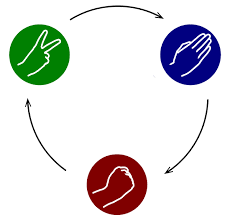
Regras do Jogo: Pedra quebra Tesoura, Tesoura corta Papel, Papel embrulha Pedra.
Link do Código:
Resolução:
import random
opcoes = ["Pedra", "Papel", "Tesoura"]
vitorias_jogador = 0
vitorias_computador = 0
empates = 0
while True:
print("\n1 - Pedra | 2 - Papel | 3 - Tesoura | 0 - Sair")
escolha = int(input("Sua escolha: "))
if escolha == 0:
break
if escolha not in [1, 2, 3]:
continue
jogada_usuario = opcoes[escolha - 1]
jogada_cpu = random.choice(opcoes)
print(f"Você: {jogada_usuario} vs CPU: {jogada_cpu}")
if jogada_usuario == jogada_cpu:
print(">> EMPATE!")
empates += 1
elif (jogada_usuario == "Pedra" and jogada_cpu == "Tesoura") or \
(jogada_usuario == "Papel" and jogada_cpu == "Pedra") or \
(jogada_usuario == "Tesoura" and jogada_cpu == "Papel"):
print(">> VOCÊ VENCEU!")
vitorias_jogador += 1
else:
print(">> COMPUTADOR VENCEU!")
vitorias_computador += 1
print(f"\nPlacar Final: Jogador {vitorias_jogador} x {vitorias_computador} CPU (Empates: {empates})")Jogo da Forca Interativo
Prova 6 - ECR - Guilherme Macario
Elaborar um programa em Python que implemente o Jogo da Forca completo, controlando o número de erros (6 tentativas), revelando as letras acertadas e exibindo o histórico de palpites.
Link do Código:
Resolução:
palavra_secreta = "ENGENHARIA".upper()
letras_acertadas = ["_" for _ in palavra_secreta]
letras_erradas = []
tentativas_maximas = 6
while True:
print(f"\nPalavra: {' '.join(letras_acertadas)}")
print(f"Erros: {', '.join(letras_erradas)} (Vidas restantes: {tentativas_maximas - len(letras_erradas)})")
chute = input("Letra: ").strip().upper()
if len(chute) != 1 or not chute.isalpha() or chute in letras_acertadas or chute in letras_erradas:
continue
if chute in palavra_secreta:
for idx, letra in enumerate(palavra_secreta):
if letra == chute:
letras_acertadas[idx] = chute
else:
letras_erradas.append(chute)
if "_" not in letras_acertadas:
print(f"\nPARABÉNS! Palavra: {palavra_secreta}")
break
if len(letras_erradas) >= tentativas_maximas:
print(f"\nGAME OVER! A palavra era: {palavra_secreta}")
break🤖 Matéria: Automação e Microcontroladores Arduino (6 Provas em C / C++)
Prova 1 — Índice de Risco de Ataques Terroristas (Bin Laden)
Prova 1 - ECR - Guilherme Macario
Aluno: Guilherme Macario da Silva — RM: 84053A morte de Osama bin Laden ocorreu durante a Operação Lança de Neptuno. Nesse dia, o governo norte-americano informou em conferência oficial que bin Laden havia sido capturado e morto por forças de operações especiais. Nesse dia, o então presidente dos Estados Unidos, Barack Obama, informou em conferência à imprensa que bin Laden havia morrido na cidade paquistanesa de Abbottabad. Segundo a versão oficial, Osama teria sido capturado e morto em um esconderijo nos arredores da cidade por forças da Joint Special Operations Command em conjunção com a CIA. Essa ocorrência deu um respiro ao perigo eminente de ataques terroristas e o mundo ocidental pode respirar um pouco mais aliviado. Foi tão importante que alterou a forma de calcular o índice que indica o quão susceptível está uma nação em relação ao terrorismo.
Até e durante o mês 5 de 2011, o índice de eminência de novos ataques era calculado, pelas agências de espionagem, através da soma da raiz quadrada do ano com o cubo do mês. Após o mês 5 de 2011, o índice de eminência de novos ataques passou a ser calculado pela subtração da metade do valor do ano pelo quadrado do mês.
Elabore um programa, em linguagem C para Arduino, que receba um ano (valor com 4 dígitos) e um mês (valor com 2 dígitos) do usuário, componha essas informações em variáveis únicas, uma para o ano e outra para o mês, e retorne o índice de eminência de novos ataques, de acordo com os padrões de cálculo apresentados no parágrafo anterior.
(Dica constante na folha original da avaliação:sqrt(valor))
Link do Código:
Resolução:
// Prova Prática Arduino C: Cálculo do Índice de Eminência de Novos Ataques Terroristas
// Disciplina: Computational Thinking for Engineering (CTE)
// Autor: Guilherme Macario da Silva
// Descrição: Recebe ano (4 dígitos) e mês (2 dígitos) via Serial e calcula o índice de risco.
#include <math.h>
void setup() {
Serial.begin(9600);
while (!Serial);
Serial.println("==================================================");
Serial.println("SISTEMA DE CALCULO DE RISCO DE ATAQUES TERRORISTAS");
Serial.println("==================================================");
}
void loop() {
int ano = 0;
int mes = 0;
float indice = 0.0;
Serial.println("\nDigite o ANO (4 digitos, ex: 2011): ");
while (Serial.available() == 0);
ano = Serial.parseInt();
Serial.println("Digite o MES (1 a 12, ex: 05): ");
while (Serial.available() == 0);
mes = Serial.parseInt();
Serial.print("Data informada: ");
if (mes < 10) Serial.print("0");
Serial.print(mes);
Serial.print("/");
Serial.println(ano);
// Regra de Negócio da Avaliação:
// Até e durante maio/2011 (mes <= 5 e ano <= 2011): Indice = sqrt(ano) + mes^3
// Após maio/2011: Indice = (ano / 2.0) - mes^2
if (ano < 2011 || (ano == 2011 && mes <= 5)) {
indice = sqrt((float)ano) + pow((float)mes, 3);
Serial.println("Criterio: Ate maio/2011 -> sqrt(ano) + mes^3");
} else {
indice = (ano / 2.0) - pow((float)mes, 2);
Serial.println("Criterio: Apos maio/2011 -> (ano / 2) - mes^2");
}
Serial.print("Indice de Eminencia de Novos Ataques: ");
Serial.println(indice, 2);
Serial.println("--------------------------------------------------");
delay(2000);
}Prova 2 — Sinalizador Luminoso de Ambulância SAMU
Prova 2 - ECR - Guilherme Macario
Aluno: Guilherme Macario da Silva — RM: 84053A superintendência do SAMU está montando um edital para compra de novas ambulâncias. Deseja acrescentar modernos sinalizadores com LEDs, compostos de controle eletrônico e diversas formas de acender e piscar. Mas possui dúvidas em relação à sua viabilidade técnica. Então decidiu te chamar para fazer a comprovação de viabilidade em um protótipo. Como você não é de perder oportunidades, logo aceitou e agora precisa montar um circuito e desenvolver um programa em linguagem C para Arduino que atenda aos requisitos do edital, que são os seguintes:
- A viatura possui 5 LEDs e 3 chaves de acionamento.
- As chaves ficam no painel da viatura.
- Os LEDs ficam dispostos na parte externa da viatura.
- A chave 2 possui 2 posições: ON e OFF. Quando ON, liga os LEDs 4 e 5, fazendo-os piscar em intervalos de 2 segundos. Quando OFF, esses LEDs apagam.
- Os LEDs 4 e 5 são complementares. Quando LED 4 está aceso, o LED 5 deve estar apagado. E vice-versa.
- A chave 3 possui 2 posições: ON e OFF. Quando em ON, liga o LED 1 e desliga o LED 2. Quando em OFF, liga o LED 2 e desliga o LED 1.
- Quando ligado, o LED 2 deve ter acendimento contínuo.
- Quando ligado, o LED 1 deve ficar aceso durante 1 segundo e apagado durante 2 segundos, periodicamente.
- A chave 1 possui 2 posições: ON e OFF. Quando em ON, desabilita as funções das chaves 2 e 3, ao mesmo tempo em que deve acender continuamente o LED 3, e apagar os demais LEDs. Quando em OFF, libera as funções das chaves 2 e 3, e apaga o LED 3.
Pinagem:
- Chave 1 - pino 8; Chave 2 - pino 9; Chave 3 - pino 10
- LED 1-pino 3; LED 2-pino 4; LED 3-pino 5; LED 4-pino 6; LED 5-pino 7
- Chaves: ON - ligada ao positivo; OFF - ligada a terra
Link do Código:
Resolução:
// Prova Prática Arduino C: Sinalizador Luminoso de Ambulância SAMU
// Disciplina: Computational Thinking for Engineering (CTE)
// Autor: Guilherme Macario da Silva
// Descrição: Controle eletrônico de viatura de socorro com 5 LEDs e 3 chaves seletoras de prioridade.
// Definição de Pinos das Chaves
const int CH1 = 8; // Chave 1 (Prioridade Máxima de Emergência)
const int CH2 = 9; // Chave 2 (Sinalizador Estroboscópico LEDs 4 e 5)
const int CH3 = 10; // Chave 3 (Sinalizador de Posição LED 1 e LED 2)
// Definição de Pinos dos LEDs
const int LED1 = 3; // LED 1 (Pisca 1s aceso / 2s apagado quando CH3 = ON)
const int LED2 = 4; // LED 2 (Aceso contínuo quando CH3 = OFF)
const int LED3 = 5; // LED 3 (Prioridade de Emergência: Aceso contínuo quando CH1 = ON)
const int LED4 = 6; // LED 4 (Pisca complementar 2s com LED 5 quando CH2 = ON)
const int LED5 = 7; // LED 5 (Pisca complementar 2s com LED 4 quando CH2 = ON)
void setup() {
pinMode(CH1, INPUT);
pinMode(CH2, INPUT);
pinMode(CH3, INPUT);
pinMode(LED1, OUTPUT);
pinMode(LED2, OUTPUT);
pinMode(LED3, OUTPUT);
pinMode(LED4, OUTPUT);
pinMode(LED5, OUTPUT);
}
void loop() {
int estadoCh1 = digitalRead(CH1);
int estadoCh2 = digitalRead(CH2);
int estadoCh3 = digitalRead(CH3);
// CHAVE 1 (Prioridade Máxima):
// Quando em ON: Desabilita chaves 2 e 3, acende continuamente LED 3 e apaga os demais LEDs.
if (estadoCh1 == HIGH) {
digitalWrite(LED3, HIGH);
digitalWrite(LED1, LOW);
digitalWrite(LED2, LOW);
digitalWrite(LED4, LOW);
digitalWrite(LED5, LOW);
} else {
// Quando em OFF: Libera as funções das chaves 2 e 3, e apaga o LED 3.
digitalWrite(LED3, LOW);
// Controle da Chave 2 (LEDs 4 e 5 complementares em intervalos de 2 segundos)
if (estadoCh2 == HIGH) {
digitalWrite(LED4, HIGH);
digitalWrite(LED5, LOW);
delay(2000);
digitalWrite(LED4, LOW);
digitalWrite(LED5, HIGH);
delay(2000);
} else {
digitalWrite(LED4, LOW);
digitalWrite(LED5, LOW);
}
// Controle da Chave 3:
// ON -> Liga LED 1 (1s aceso / 2s apagado periodicamente) e desliga LED 2
// OFF -> Liga LED 2 com acendimento contínuo e desliga LED 1
if (estadoCh3 == HIGH) {
digitalWrite(LED2, LOW);
digitalWrite(LED1, HIGH);
delay(1000);
digitalWrite(LED1, LOW);
delay(2000);
} else {
digitalWrite(LED1, LOW);
digitalWrite(LED2, HIGH);
}
}
}Prova 3 — Automação de Esteira Industrial com Aquecimento e Resfriamento
Prova 3 - ECR - Guilherme Macario
Na esteira industrial a peça é colocada na posição dada pelo sensor S1, acionando o motor M1 até o sistema de aquecimento S2 (onde para por 3 segundos). Em seguida, o motor M1 é ligado novamente para conduzir a peça ao resfriamento S3 (aguardando 4 segundos neste estágio). Decorrido este tempo, o motor M1 é acionado para levar a peça até o sensor de saída S4, quando o motor é desligado.Considerações Técnicas:
- Sensores S1, S2, S3 e S4 simulados com Pushbuttons (pull-up).
- Atuador M1: Motor DC da esteira.
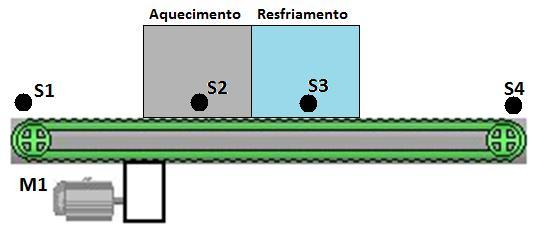
Figura 1: Diagrama esquemático oficial da esteira industrial com zonas térmicas e sensores S1 a S4.
Link do Código:
Resolução (Arduino C++):
const int PIN_S1 = 2;
const int PIN_S2 = 3;
const int PIN_S3 = 4;
const int PIN_S4 = 5;
const int PIN_M1 = 8;
void setup() {
pinMode(PIN_S1, INPUT_PULLUP);
pinMode(PIN_S2, INPUT_PULLUP);
pinMode(PIN_S3, INPUT_PULLUP);
pinMode(PIN_S4, INPUT_PULLUP);
pinMode(PIN_M1, OUTPUT);
digitalWrite(PIN_M1, LOW);
}
void aguardar(int pin) {
while (digitalRead(pin) == HIGH) { delay(20); }
}
void loop() {
aguardar(PIN_S1);
digitalWrite(PIN_M1, HIGH);
aguardar(PIN_S2);
digitalWrite(PIN_M1, LOW);
delay(3000);
digitalWrite(PIN_M1, HIGH);
aguardar(PIN_S3);
digitalWrite(PIN_M1, LOW);
delay(4000);
digitalWrite(PIN_M1, HIGH);
aguardar(PIN_S4);
digitalWrite(PIN_M1, LOW);
}Prova 4 — Contador de Peças Industriais com Alerta de Lotação de Caixa
Prova 4 - ECR - Guilherme Macario
No sistema automatizado, quando uma peça é colocada na posição do sensor S1, o motor M1 é ligado levando a peça até o sensor S2 para descarte na caixa coletora de saída. A caixa suporta até 20 peças. Ao atingir 20 peças, o motor M1 é imediatamente desligado e a lâmpada/LED L1 é acionada, alertando o operador da fábrica para substituição da caixa.Considerações Técnicas:
- Sensores S1 e S2 simulados com Pushbuttons.
- Sinalizador L1: LED/Lâmpada de alerta.
- Atuador M1: Motor DC da esteira.
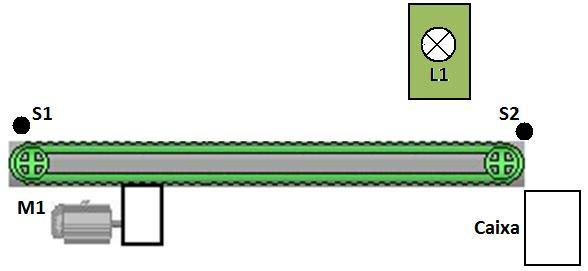
Figura 2: Diagrama esquemático da esteira com caixa de saída e lâmpada de alerta L1.
Link do Código:
Resolução (Arduino C++):
const int PIN_S1 = 2;
const int PIN_S2 = 3;
const int PIN_M1 = 8;
const int PIN_L1 = 9;
int totalPecas = 0;
void setup() {
pinMode(PIN_S1, INPUT_PULLUP);
pinMode(PIN_S2, INPUT_PULLUP);
pinMode(PIN_M1, OUTPUT);
pinMode(PIN_L1, OUTPUT);
digitalWrite(PIN_M1, LOW);
digitalWrite(PIN_L1, LOW);
}
void loop() {
if (totalPecas < 20) {
if (digitalRead(PIN_S1) == LOW) {
digitalWrite(PIN_M1, HIGH);
while (digitalRead(PIN_S2) == HIGH) { delay(20); }
totalPecas++;
delay(200);
if (totalPecas >= 20) {
digitalWrite(PIN_M1, LOW);
digitalWrite(PIN_L1, HIGH);
}
}
}
}Prova 5 — Painel de Operador com Botão de Reset e Reinício de Ciclo
Prova 5 - ECR - Guilherme Macario
Acrescentar ao sistema de esteira o botão B1 no painel do operador para que, após a substituição da caixa cheia, o operador aperte o botão B1 para desligar a lâmpada L1. Neste momento, o contador de peças é zerado e o ciclo operacional se reinicia automaticamente.Considerações Técnicas:
- Botão B1 de comando industrial (Pushbutton com debounce).
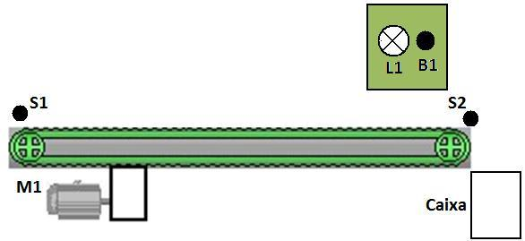
Figura 3: Painel de controle do operador com botão B1 e lâmpada sinalizadora L1.
Link do Código:
Resolução (Arduino C++):
const int PIN_S1 = 2;
const int PIN_S2 = 3;
const int PIN_B1 = 4;
const int PIN_M1 = 8;
const int PIN_L1 = 9;
int contadorPecas = 0;
void setup() {
pinMode(PIN_S1, INPUT_PULLUP);
pinMode(PIN_S2, INPUT_PULLUP);
pinMode(PIN_B1, INPUT_PULLUP);
pinMode(PIN_M1, OUTPUT);
pinMode(PIN_L1, OUTPUT);
digitalWrite(PIN_M1, LOW);
digitalWrite(PIN_L1, LOW);
}
void loop() {
if (contadorPecas < 20) {
if (digitalRead(PIN_S1) == LOW) {
digitalWrite(PIN_M1, HIGH);
while (digitalRead(PIN_S2) == HIGH) { delay(20); }
contadorPecas++;
delay(200);
if (contadorPecas >= 20) {
digitalWrite(PIN_M1, LOW);
digitalWrite(PIN_L1, HIGH);
}
}
} else {
if (digitalRead(PIN_B1) == LOW) {
delay(50);
if (digitalRead(PIN_B1) == LOW) {
contadorPecas = 0;
digitalWrite(PIN_L1, LOW);
while (digitalRead(PIN_B1) == LOW);
}
}
}
}Prova 6 — Classificador Ótico de Caixas por Altura com Sensores Múltiplos
Prova 6 - ECR - Guilherme Macario
Sistema de triagem automática e seleção por altura de caixas em esteira industrial. Quando uma caixa é inserida no sensor S1, o motor M1 é ligado conduzindo a caixa até o sensor de descarregamento S5. Conforme a altura da embalagem, detectada pelos sensores óticos verticais S2, S3 e S4, aciona-se exclusivamente o sinalizador luminoso correspondente (L1 para Caixa Baixa, L2 para Caixa Média, L3 para Caixa Alta), permanecendo aceso até a chegada ao sensor final S5.Considerações Técnicas:
- Sensores S1 a S5 simulados com entradas digitais.
- Sinalizadores L1, L2 e L3: LEDs indicativos de categoria.
- Atuador M1: Motor DC da esteira.
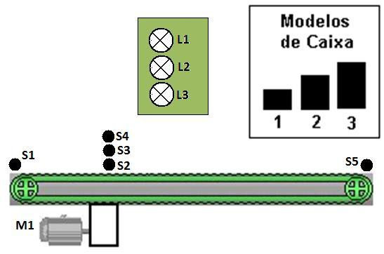
Figura 4: Triagem ótica de caixas por altura com matriz de sensores S2, S3, S4 e sinalizadores L1, L2, L3.
Link do Código:
Resolução (Arduino C++):
const int PIN_S1 = 2, PIN_S2 = 3, PIN_S3 = 4, PIN_S4 = 5, PIN_S5 = 6;
const int PIN_M1 = 8, PIN_L1 = 9, PIN_L2 = 10, PIN_L3 = 11;
void setup() {
pinMode(PIN_S1, INPUT_PULLUP);
pinMode(PIN_S2, INPUT_PULLUP);
pinMode(PIN_S3, INPUT_PULLUP);
pinMode(PIN_S4, INPUT_PULLUP);
pinMode(PIN_S5, INPUT_PULLUP);
pinMode(PIN_M1, OUTPUT);
pinMode(PIN_L1, OUTPUT);
pinMode(PIN_L2, OUTPUT);
pinMode(PIN_L3, OUTPUT);
digitalWrite(PIN_M1, LOW);
}
void apagarLEDs() {
digitalWrite(PIN_L1, LOW);
digitalWrite(PIN_L2, LOW);
digitalWrite(PIN_L3, LOW);
}
void loop() {
apagarLEDs();
while (digitalRead(PIN_S1) == HIGH) { delay(20); }
digitalWrite(PIN_M1, HIGH);
delay(100);
if (digitalRead(PIN_S4) == LOW) {
digitalWrite(PIN_L3, HIGH);
} else if (digitalRead(PIN_S3) == LOW) {
digitalWrite(PIN_L2, HIGH);
} else {
digitalWrite(PIN_L1, HIGH);
}
while (digitalRead(PIN_S5) == HIGH) { delay(20); }
digitalWrite(PIN_M1, LOW);
apagarLEDs();
}3. Sprints de Engenharia (Challenge Hospital Alemão Oswaldo Cruz)
Projeto Integrado de Inovação em Saúde: Exoesqueleto Ativo de Membro Superior com Interface Cérebro-Máquina (BMI/BCI)
Parceiro Institucional: Hospital Alemão Oswaldo Cruz (HAOC) • Engenharia Biomédica e IoT
Fase: Consolidação Final (Sprints 1, 2, 3 e 4) • Status: Ciclo Anual Aprovado e Validado ✅
Documentação Técnica Oficial: 📄 Relatório Técnico Integrado HAOC (PDF) • 📚 Referência Internacional Industrie 4.0 IoT (PDF)
Sprint 1 — Proposta do Challenge, Hardware, Software e Cronograma
1. Ideia Consolidada e Objetivo Clínico
Desenvolver um exoesqueleto robótico de membro superior assistido por Interface Cérebro-Máquina (BMI/BCI) não invasiva, microcontrolado via ESP32, visando a neurorreabilitação motora ativa de pacientes pós-Acidente Vascular Cerebral (AVC) e portadores de lesões neuromusculares no Hospital Alemão Oswaldo Cruz.A recuperação funcional tradicional sofre com a dissociação temporal entre a intenção voluntária do paciente e a resposta mecânica do membro paralisado. Ao capturar os ritmos sensoriomotores (ondas Mu e Beta no córtex motor) momentos antes da execução, o exoesqueleto atua em regime de assist-as-needed (assistência sob demanda), potencializando a neuroplasticidade e estimulando o remapeamento cortical sináptico.
- Latência Média de Resposta:
< 380 ms(do limiar de intenção neural ao avanço inicial do torque motriz).- Precisão Angular no Membro:
± 0,45°(garantida pelo microstepping 1/16 do motor de passo com redutor).- Velocidade Angular Segura:
25°/s(parâmetro fisioterapêutico para proteção articular).- Torque Máximo Operacional:
4,8 N·m(torque dinâmico na junta do cotovelo).
Link do Documento:
Sprint 2 — Ideia Consolidada, Arquitetura e Diagrama de Sistema
2. Diagrama de Arquitetura do Sistema (Closed-Loop)
A arquitetura opera em malha fechada (closed-loop), dividida em quatro camadas funcionais interconectadas:
graph TD
subgraph 1. Camada Neural (BCI)
E[Eletrodos Córtex Motor C3/Cz/C4] --> F[Filtro Notch 60Hz + Bandpass 8-30Hz]
F --> EXT[Extração de Ondas Mu e Beta]
EXT --> S1[Saída: UART / BLE Intenção]
end
subgraph 2. Unidade Central (ESP32)
S1 --> FSM[FSM de Controle de Estado e Segurança]
FSM --> STEP[Geração de Pulsos STEP / DIR]
ENC[Encoders AS5600 + Fim-de-Curso] --> FSM
end
subgraph 3. Potência Mecânica
STEP --> DRV[Driver Silencioso TMC2208]
DRV --> MOT[Motor de Passo NEMA 23]
MOT --> RED[Redução Epicicloidal 1:10]
RED --> ORT[Órtese / Junta Articular (4.8 N·m)]
end
subgraph 4. Telemetria Médica
FSM --> GTW[Gateway Wi-Fi HTTPS / TLS 1.3]
GTW --> JSON[Formato HL7 / FHIR JSON]
JSON --> DASH[Dashboard Fisioterapeuta HAOC]
DASH --> PRONT[Prontuário Oswaldo Cruz]
end
Segurança Intrínseca: O firmware monitora interruptores mecânicos e limite de corrente em tempo real. Qualquer desacoplamento do eletrodo ou desvio de trajetória corta imediatamente a alimentação dos enrolamentos (E-Stop por hardware).
Link do Documento:
Sprint 3 — Custo de Desenvolvimento e Protótipo de Engenharia
3. Engenharia, Dimensionamento Orçamentário e Custos (BOM)
Status: APROVADO SPRINT 3 CTE ✅Especificação de Hardware:
- Módulo de Processamento (MCU): ESP32 WROOM-32D Dual-Core com co-processador ULP dedicado ao debounce e leitura analógica.
- Interface Neural (BMI): Front-end biopotencial com eletrodos secos em C3/Cz/C4 (sistema 10-20), conversão analógica de 24 bits e CMRR > 110 dB.
- Atuação e Cinomática: Motor de Passo NEMA 23 (18 kgf·cm) associado a redutor planetário 1:10 (torque 4,8 N·m).
- Driver Silencioso: Trinamic TMC2208 com tecnologia StealthChop2, eliminando ruídos acústicos.
| Item / Componente | Modelo / Especificação | Qtd. | Unitário (R$) | Total (R$) |
|---|---|---|---|---|
| Microcontrolador Principal | ESP32 NodeMCU 30 Pinos | 2 un | R$ 48,00 | R$ 96,00 |
| Headset Neural / Módulo EEG | Kit Front-End Biopotencial BCI | 1 un | R$ 890,00 | R$ 890,00 |
| Atuador Eletromecânico | Motor de Passo NEMA 23 + Redutor 1:10 | 1 un | R$ 380,00 | R$ 380,00 |
| Módulo Driver de Potência | TMC2208 SilentStepStick | 2 un | R$ 42,00 | R$ 84,00 |
| Estrutura Exoesquelética 3D | Filamento PETG / Fibra de Carbono | 1 kg | R$ 180,00 | R$ 180,00 |
| Encoders e Finais de Curso | AS5600 Magnético + Microswitches | 1 kit | R$ 75,00 | R$ 75,00 |
| Fonte Chaveada e Proteções | 24V 5A Industrial c/ Optoacopladores | 1 un | R$ 135,00 | R$ 135,00 |
| CUSTO TOTAL DE MATERIAIS (PROTÓTIPO FUNCIONAL): | R$ 1.840,00 |
Firmware Embarcado e Telemetria (Build v2.4-STABLE):
Implementação em C/C++ FreeRTOS com interrupção de emergência IRAM_ATTR e despacho de relatório estruturado em JSON com conformidade LGPD e criptografia TLS 1.3 ponta a ponta.
Link do Documento:
Sprint 4 — Relatório Final Integrado e Conclusão
4. Cronograma Anual Consolidado e Conclusão Executiva
Status: CICLO ANUAL COMPLETO VALIDADO ✅
| Bimestre / Mês | Etapa do Projeto | Atividades e Marcos Técnicos | Status |
|---|---|---|---|
| Mês 01 – 02 | Sprint 1: Requisitos & Concepção | Levantamento com equipe do Oswaldo Cruz, definição de graus de liberdade e segurança articular. | Concluído ✅ |
| Mês 03 – 04 | Sprint 2: Arquitetura & Bancada | Modelagem CAD da órtese, testes elétricos do ESP32 com motor NEMA e validação da recepção serial BCI. | Concluído ✅ |
| Mês 05 – 06 | Sprint 3: Custos & Protótipo | Cotação de componentes (BOM), montagem da PCB modular e ensaios de torque sob carga controlada. | Concluído ✅ |
| Mês 07 – 08 | Sprint 4: Integração & Telemetria | Geração dos relatórios em JSON, homologação de testes com parada de emergência e documentação final. | Concluído ✅ |
| Mês 09 – 10 | Homologação Hospitalar | Ensaios simulados com equipe de fisioterapia em ambiente controlado no HAOC. | Em Planejamento ⏳ |
| Mês 11 – 12 | Piloto Clínico & Artigo | Coleta de dados de eficácia terapêutica e submissão de relatório para o comitê de ética. | Projetado 🎯 |
Conclusão Executiva:
- Custo-Benefício Excepcional: Custo total de hardware de bancada (R$ 1.840,00) substancialmente mais acessível que alternativas comerciais importadas.
- Eficiência Terapêutica: Acoplamento do limiar de intenção neural com movimento mecânico imediato atende às diretrizes de reeducação neurofuncional do Hospital Oswaldo Cruz.
- Integração Médica Direta: Emissão automatizada do relatório para a nuvem desonera a equipe médica de anotações manuais.
- Assinatura Técnica do Projeto: Documento técnico compilado para avaliação da banca examinadora da FIAP e supervisão médica do Hospital Alemão Oswaldo Cruz.
Links e Documentos Oficiais:
- 🔗 Enunciado e Código:
Enunciado_Sprint_4_CTE.md - 📄 Relatório Técnico Integrado (PDF HAOC):
Relatório Técnico Integrado - Exoesqueleto BCI HAOC.pdf - 📚 Artigo Científico (ScienceDirect / Elsevier): Exoskeletons Towards Industrie 4.0: Benefits and Challenges of the IoT
4. Exercícios Práticos de Laboratório
🐍 Matéria: Programação em Python
Módulo 1: Estruturas Sequenciais, Variáveis e Operações Aritméticas
Identificação do Estudante e RM
Faça um programa que mostre seu nome completo na tela e seu RM da FIAP.
Exemplo de Entrada:
Nome: Guilherme Macario da Silva
RM: 84053Exemplo de Saída:
Nome: Guilherme Macario da Silva
RM: 84053
Link do Código:
Resolução:
nome = input("Digite seu nome completo: ")
rm = input("Digite seu RM: ")
print(f"Nome: {nome}")
print(f"RM: {rm}")Conversor de Temperaturas Celsius e Fahrenheit
Com função, crie um programa de conversão entre as temperaturas Celsius e Farenheit. Primeiro o usuário deve escolher se vai entrar com a temperatura em Célsius ou Farenheit, depois a conversão escolhida é realizada através de comandos IF. Se C é a temperatura em Célsius e F em Farenheit, as fórmulas de conversão são: C = 5*(F-32)/9 e F = (9*C/5) + 32.
Link do Código:
Resolução:
def celsius_para_fahrenheit(c):
return (9 * c / 5) + 32
def fahrenheit_para_celsius(f):
return 5 * (f - 32) / 9
print("=== CONVERSOR DE TEMPERATURA ===")
print("1 - Celsius para Fahrenheit")
print("2 - Fahrenheit para Celsius")
op = input("Escolha a opção (1 ou 2): ")
if op == '1':
c = float(input("Digite a temperatura em ºC: "))
print(f"{c} ºC = {celsius_para_fahrenheit(c):.2f} ºF")
elif op == '2':
f = float(input("Digite a temperatura em ºF: "))
print(f"{f} ºF = {fahrenheit_para_celsius(f):.2f} ºC")
else:
print("Opção inválida.")Cálculo do Volume de uma Esfera
Elabore um programa em Python com uma função que recebe o raio de uma esfera e calcula o seu volume (
$v = rac{4}{3}\pi R^3$ ).
Link do Código:
Resolução:
import math
def volume_esfera(raio):
return (4.0 / 3.0) * math.pi * (raio ** 3)
r = float(input("Digite o raio da esfera: "))
print(f"O volume da esfera de raio {r} é: {volume_esfera(r):.4f}")Conversão de Tempo para Segundos
Elabore um programa em Python com uma função que recebe o tempo de duração de um vídeo expresso em horas, minutos e segundos e retorna esse tempo em segundos.
Link do Código:
Resolução:
def converter_para_segundos(horas, minutos, segundos):
return (horas * 3600) + (minutos * 60) + segundos
h = int(input("Horas: "))
m = int(input("Minutos: "))
s = int(input("Segundos: "))
print(f"Tempo total em segundos: {converter_para_segundos(h, m, s)} segundos")Conversão de Idade em Dias
Elabore um programa em Python com uma função que recebe a idade de uma pessoa em anos, meses e dias e retorna essa idade expressa em dias.
Link do Código:
Resolução:
def idade_em_dias(anos, meses, dias):
return (anos * 365) + (meses * 30) + dias
a = int(input("Anos: "))
m = int(input("Meses: "))
d = int(input("Dias: "))
print(f"Idade total expressa em dias: {idade_em_dias(a, m, d)} dias")Cálculo do Peso Ideal por Altura e Sexo
Elabore um programa em Python com uma função que recebe a altura (alt) e o sexo de uma pessoa e retorna o seu peso ideal. Para homens:
$72.7 imes ext{alt} - 58$ . Para mulheres:$62.1 imes ext{alt} - 44.7$ .
Link do Código:
Resolução:
def peso_ideal(altura, sexo):
sexo = sexo.strip().upper()
if sexo == 'M':
return (72.7 * altura) - 58.0
elif sexo == 'F':
return (62.1 * altura) - 44.7
else:
raise ValueError("Sexo inválido. Utilize 'M' ou 'F'.")
alt = float(input("Digite a altura em metros: "))
sexo = input("Digite o sexo (M/F): ")
print(f"Peso ideal calculado: {peso_ideal(alt, sexo):.2f} kg")Módulo 2: Estruturas de Decisão e Desvios Condicionais (if / elif / else)
Verificação de Número Positivo
Crie um programa com uma função que receba um valor e informe se ele é positivo ou não.
Link do Código:
Resolução:
def eh_positivo(valor):
return valor > 0
num = float(input("Digite um número: "))
print("É positivo?" if eh_positivo(num) else "Não é positivo.")Verificação de Número Nulo
Crie um programa com uma função que receba um valor e diga se é nulo ou não.
Link do Código:
Resolução:
def eh_nulo(valor):
return valor == 0
num = float(input("Digite um número: "))
print("É nulo (zero)." if eh_nulo(num) else "Não é nulo.")Maior Valor entre 2 Números
Crie um programa com uma função em linguagem python que receba 2 números e retorne o maior valor.
Link do Código:
Resolução:
def maior_de_dois(n1, n2):
return n1 if n1 > n2 else n2
a = float(input("1º número: "))
b = float(input("2º número: "))
print(f"Maior: {maior_de_dois(a, b)}")Menor Valor entre 2 Números
Crie um programa com uma função em linguagem python que receba 2 números e retorne o menor valor.
Link do Código:
Resolução:
def menor_de_dois(n1, n2):
return n1 if n1 < n2 else n2
a = float(input("1º número: "))
b = float(input("2º número: "))
print(f"Menor: {menor_de_dois(a, b)}")Maior Valor entre 3 Números
Crie um programa com uma função em linguagem python que receba 3 números e retorne o maior valor.
Link do Código:
Resolução:
def maior_de_tres(a, b, c):
maior = a
if b > maior: maior = b
if c > maior: maior = c
return maior
a = float(input("a: "))
b = float(input("b: "))
c = float(input("c: "))
print(f"Maior: {maior_de_tres(a, b, c)}")Menor Valor entre 3 Números
Crie um programa com uma função em linguagem python que receba 3 números e retorne o menor valor.
Link do Código:
Resolução:
def menor_de_tres(a, b, c):
menor = a
if b < menor: menor = b
if c < menor: menor = c
return menor
a = float(input("a: "))
b = float(input("b: "))
c = float(input("c: "))
print(f"Menor: {menor_de_tres(a, b, c)}")Classificação e Verificação de Triângulos
Elabore um programa em Python com uma função que receba 3 valores reais X, Y e Z e verifique se podem formar triângulo. Identificar se é Equilátero (3 iguais), Isósceles (2 iguais) ou Escaleno (3 diferentes).
Link do Código:
Resolução:
def classificar_triangulo(x, y, z):
if (x < y + z) and (y < x + z) and (z < x + y):
if x == y == z:
return "Triângulo Equilátero"
elif x == y or x == z or y == z:
return "Triângulo Isósceles"
else:
return "Triângulo Escaleno"
return "Não forma triângulo"
x = float(input("X: "))
y = float(input("Y: "))
z = float(input("Z: "))
print(classificar_triangulo(x, y, z))Classificação de Categoria de Nadador
Elabore um programa que receba a idade de um nadador e retorne sua categoria:
- 5 a 7: Infantil A
- 8 a 10: Infantil B
- 11 a 13: Juvenil A
- 14 a 17: Juvenil B
= 18: Adulto
Link do Código:
Resolução:
def categoria_nadador(idade):
if 5 <= idade <= 7: return "Infantil A"
elif 8 <= idade <= 10: return "Infantil B"
elif 11 <= idade <= 13: return "Juvenil A"
elif 14 <= idade <= 17: return "Juvenil B"
elif idade >= 18: return "Adulto"
return "Abaixo da idade mínima permitida"
idade = int(input("Idade: "))
print(f"Categoria: {categoria_nadador(idade)}")Verificação Booleana Positivo ou Negativo
Elabore uma função que recebe um valor inteiro e verifica se é positivo ou negativo, retornando booleano.
Link do Código:
Resolução:
def eh_positivo(num):
return num >= 0
val = int(input("Valor: "))
print(f"É positivo? {eh_positivo(val)}")Verificação Booleana Par ou Ímpar
Elabore uma função que recebe um valor inteiro e verifica se é par ou ímpar, retornando booleano.
Link do Código:
Resolução:
def eh_par(num):
return num % 2 == 0
val = int(input("Valor: "))
print(f"É par? {eh_par(val)}")Conceito Acadêmico por Faixa de Nota
Elabore uma função que recebe a média final e retorna o conceito:
- 0.0 a 4.9: D
- 5.0 a 6.9: C
- 7.0 a 8.9: B
- 9.0 a 10.0: A
Link do Código:
Resolução:
def obter_conceito(media):
if 0.0 <= media <= 4.9: return 'D'
elif 5.0 <= media <= 6.9: return 'C'
elif 7.0 <= media <= 8.9: return 'B'
elif 9.0 <= media <= 10.0: return 'A'
return 'Nota inválida'
media = float(input("Média final: "))
print(f"Conceito: {obter_conceito(media)}")Duração de Jogo com Transição de Meia-Noite
Elabore uma função que recebe a hora de início e de término de um jogo (horas e minutos) e retorna a duração total em minutos, considerando jogos de até 24 horas que podem cruzar a meia-noite.
Link do Código:
Resolução:
def duracao_jogo_minutos(h_ini, m_ini, h_fim, m_fim):
inicio = (h_ini * 60) + m_ini
fim = (h_fim * 60) + m_fim
return fim - inicio if fim >= inicio else (24 * 60 - inicio) + fim
h1 = int(input("Hora início: "))
m1 = int(input("Minuto início: "))
h2 = int(input("Hora término: "))
m2 = int(input("Minuto término: "))
dur = duracao_jogo_minutos(h1, m1, h2, m2)
print(f"Duração: {dur} minutos ({dur // 60}h {dur % 60}min)")Módulo 3: Estruturas de Repetição e Laços (for / while)
Simulação de Monte Carlo: 1 Milhão de Lançamentos de Dado
Lance o dado 1 milhão de vezes com a função
Dado(). Conte quantas vezes cada número saiu e analise a distribuição probabilística empírica em relação à probabilidade teórica (16.67%).
Link do Código:
Resolução:
import random
def Dado():
return random.randint(1, 6)
total_lancamentos = 1_000_000
contadores = {1: 0, 2: 0, 3: 0, 4: 0, 5: 0, 6: 0}
for _ in range(total_lancamentos):
face = Dado()
contadores[face] += 1
print("=== DISTRIBUIÇÃO DE PROBABILIDADE ===")
for face, cont in contadores.items():
pct = (cont / total_lancamentos) * 100
print(f"Face {face}: {cont:,} vezes ({pct:.2f}%) - Teórico: ~16.67%")Tabuada Dinâmica de 1 até N
Elabore uma função que recebe um valor N e calcula e escreve a tabuada de 1 até N.
Link do Código:
Resolução:
def tabuada_ate_n(n):
for i in range(1, n + 1):
print(f"{i} x {n} = {i * n}")
n = int(input("Digite N: "))
tabuada_ate_n(n)Pesquisa Demográfica Municipal (Salários e Filhos)
Pesquisa entre habitantes coletando salário e número de filhos para número indeterminado de pessoas. Retornar média de salário, média de filhos, maior salário e percentual de pessoas com salário até R$ 350,00.
Link do Código:
Resolução:
def pesquisar_habitantes():
salarios, filhos = [], []
while True:
sal = float(input("Salário (negativo para parar): R$ "))
if sal < 0: break
num_f = int(input("Número de filhos: "))
salarios.append(sal)
filhos.append(num_f)
if salarios:
print(f"Média Salário: R$ {sum(salarios)/len(salarios):.2f}")
print(f"Média Filhos: {sum(filhos)/len(filhos):.1f}")
print(f"Maior Salário: R$ {max(salarios):.2f}")
pct = (len([s for s in salarios if s <= 350])/len(salarios))*100
print(f"Salário até R$350: {pct:.2f}%")
pesquisar_habitantes()Média Aritmética de Valores Positivos Indeterminados
Leia um número não determinado de valores positivos e retorne a média aritmética deles. Finalizar ao digitar número negativo.
Link do Código:
Resolução:
def media_positivos():
valores = []
while True:
v = float(input("Valor (negativo encerra): "))
if v < 0: break
valores.append(v)
return sum(valores) / len(valores) if valores else 0.0
print(f"Média: {media_positivos():.2f}")Maior e Menor entre 50 Valores Inteiros
Elabore uma função que lê 50 valores inteiros e retorna o maior e o menor deles.
Link do Código:
Resolução:
def maior_menor_50(valores):
return max(valores), min(valores)
amostra = [i for i in range(1, 51)]
maior, menor = maior_menor_50(amostra)
print(f"Maior: {maior} | Menor: {menor}")Módulo 4: Funções Modulares e Algoritmos Matemáticos (def)
Cálculo do Discriminante Δ de Equação do 2º Grau
Crie um programa com uma função que receba três valores ('a', 'b', 'c') e retorne o valor de
$\Delta$ ($b^2 - 4ac$ ).
Link do Código:
Resolução:
def calcular_delta(a, b, c):
return (b ** 2) - (4 * a * c)
a = float(input("a: "))
b = float(input("b: "))
c = float(input("c: "))
print(f"Δ = {calcular_delta(a, b, c)}")Resolução da Equação do 2º Grau (Raízes Reais e Complexas)
Crie um programa que calcula as raízes de uma equação do 2º grau (
$ax^2 + bx + c = 0$ ). Se$\Delta \ge 0$ , raízes reais; se$\Delta < 0$ , raízes complexas da forma$x + iy$ .
Link do Código:
Resolução:
import math
def resolver_equacao_2grau(a, b, c):
if a == 0:
print("Erro: 'a' não pode ser zero.")
return
delta = (b ** 2) - (4 * a * c)
if delta >= 0:
x1 = (-b + math.sqrt(delta)) / (2 * a)
x2 = (-b - math.sqrt(delta)) / (2 * a)
print(f"Raízes reais: x1 = {x1:.4f}, x2 = {x2:.4f}")
else:
real = -b / (2 * a)
imag = math.sqrt(-delta) / (2 * a)
print(f"Raízes complexas: x1 = {real:.4f} + {imag:.4f}i, x2 = {real:.4f} - {imag:.4f}i")
a = float(input("a: "))
b = float(input("b: "))
c = float(input("c: "))
resolver_equacao_2grau(a, b, c)Resolução da Fórmula de Bhaskara
Elabore uma função que recebe os coeficientes da fórmula de Bhaskara e imprime as raízes caso seja possível calcular.
Link do Código:
Resolução:
import math
def bhaskara(a, b, c):
if a == 0: return
d = (b**2) - (4*a*c)
if d >= 0:
print(f"x1 = {(-b + math.sqrt(d))/(2*a):.4f}")
print(f"x2 = {(-b - math.sqrt(d))/(2*a):.4f}")
else:
print("Sem raízes reais")
bhaskara(float(input("a: ")), float(input("b: ")), float(input("c: ")))Média com Descarte da Menor Nota (3 Provas)
Função que recebe 3 notas e mostra a média com as 3 provas, a média com as 2 maiores notas, a nota mais alta e a mais baixa.
Link do Código:
Resolução:
def analisar_notas(n1, n2, n3):
notas = sorted([n1, n2, n3])
print(f"Média 3 provas: {sum(notas)/3.0:.2f}")
print(f"Média 2 maiores: {(notas[1] + notas[2])/2.0:.2f}")
print(f"Maior: {notas[2]} | Menor: {notas[0]}")
analisar_notas(float(input("N1: ")), float(input("N2: ")), float(input("N3: ")))Identificação e Listagem de Números Primos até 1000
Elabore uma função que ache todos os números primos até 1000.
Link do Código:
Resolução:
def eh_primo(n):
if n < 2: return False
for i in range(2, int(n**0.5) + 1):
if n % i == 0: return False
return True
primos = [n for n in range(2, 1001) if eh_primo(n)]
print(f"Total: {len(primos)} primos até 1000.")
print(primos)Teste Booleano de Primalidade
Recebe um número inteiro positivo e retorna Verdadeiro se for primo e Falso caso contrário.
Link do Código:
Resolução:
def eh_primo(valor):
if valor <= 1: return False
for i in range(2, int(valor**0.5) + 1):
if valor % i == 0: return False
return True
print(eh_primo(int(input("Número: "))))Máximo Divisor Comum (MDC pelo Algoritmo de Euclides)
Recebe dois inteiros e retorna o Máximo Divisor Comum (MDC).
Link do Código:
Resolução:
def mdc(a, b):
while b != 0:
a, b = b, a % b
return abs(a)
print(f"MDC: {mdc(int(input('N1: ')), int(input('N2: ')))}")Identificação e Listagem de Números Perfeitos até 1000
Achar todos os números perfeitos até 1000 (soma dos divisores próprios igual ao próprio número).
Link do Código:
Resolução:
def eh_perfeito(n):
return sum([i for i in range(1, n) if n % i == 0]) == n
perfeitos = [n for n in range(1, 1001) if eh_perfeito(n)]
print(f"Perfeitos até 1000: {perfeitos}")Teste Booleano de Número Perfeito
Verifica se um valor é perfeito ou não, retornando booleano.
Link do Código:
Resolução:
def verificar_perfeito(num):
if num <= 0: return False
return sum([i for i in range(1, num) if num % i == 0]) == num
print(verificar_perfeito(int(input("Número: "))))Inversão de Dígitos de Números Inteiros
Recebe um número inteiro (ex: 123) e imprime ele invertido (ex: 321).
Link do Código:
Resolução:
def inverter_numero(n):
s = str(abs(n))[::-1]
res = int(s)
return -res if n < 0 else res
print(inverter_numero(int(input("Número: "))))Médias Aritmética, Ponderada e Harmônica
Recebe 3 notas e uma letra: A (Aritmética), P (Ponderada pesos 5, 3, 2) e H (Harmônica).
Link do Código:
Resolução:
def calcular_media(n1, n2, n3, tipo):
t = tipo.upper()
if t == 'A': return (n1 + n2 + n3) / 3.0
elif t == 'P': return ((n1*5) + (n2*3) + (n3*2)) / 10.0
elif t == 'H': return 3.0 / ((1.0/n1) + (1.0/n2) + (1.0/n3))
print(f"Média: {calcular_media(float(input('N1: ')), float(input('N2: ')), float(input('N3: ')), input('Tipo (A/P/H): ')):.2f}")Cálculo de Fatorial
Recebe um inteiro positivo e calcula seu fatorial.
Link do Código:
Resolução:
def fatorial(n):
fat = 1
for i in range(2, n + 1): fat *= i
return fat
n = int(input("N: "))
print(f"{n}! = {fatorial(n)}")Contagem de Divisores de um Número Inteiro
Recebe um valor inteiro positivo e retorna a quantidade de divisores dele.
Link do Código:
Resolução:
def contar_divisores(n):
return len([i for i in range(1, n + 1) if n % i == 0])
print(f"Total divisores: {contar_divisores(int(input('N: ')))}")Somatório de 1 até N
Recebe um valor positivo N e retorna o somatório
$1 + 2 + ... + N$ .
Link do Código:
Resolução:
def somatorio(n):
return (n * (n + 1)) // 2
print(f"Somatório: {somatorio(int(input('N: ')))}")Série Harmônica S = 1 + 1/2 + 1/3 + ... + 1/N
Recebe um parâmetro inteiro N e calcula a soma da Série Harmônica.
Link do Código:
Resolução:
def serie_harmonica(n):
return sum(1.0 / i for i in range(1, n + 1))
print(f"S = {serie_harmonica(int(input('N: '))):.6f}")Série de Euler S = 1 + 1/1! + 1/2! + ... + 1/N!
Recebe N e calcula a aproximação do número de Euler
$e$ por somatório com fatoriais.
Link do Código:
Resolução:
import math
def serie_euler(n):
return 1.0 + sum(1.0 / math.factorial(i) for i in range(1, n + 1))
print(f"e ~ {serie_euler(int(input('N: '))):.8f}")Exponenciação Manual X elevado a Z
Recebe dois valores X e Z e calcula
$X^Z$ utilizando apenas laço de repetição.
Link do Código:
Resolução:
def potencia_manual(x, z):
if z == 0: return 1.0
res = 1.0
for _ in range(abs(z)):
res *= x
return 1.0 / res if z < 0 else res
x = float(input("Base X: "))
z = int(input("Expoente Z: "))
print(f"{x}^{z} = {potencia_manual(x, z)}")Módulo 5: Estruturas de Dados (Listas e Dicionários)
Sistema de Cadastro e Gestão de Estoque com Dicionários
Implementar um sistema de gerenciamento e cadastro de produtos em Python utilizando Dicionários e Listas (
dictelist), com código, nome, preço, quantidade, cálculo do valor total de estoque e busca indexada.
Link do Código:
Resolução:
banco_dados = []
def cadastrar():
p = {
"codigo": int(input("Código: ")),
"nome": input("Nome: "),
"preco": float(input("Preço: ")),
"quantidade": int(input("Quantidade: "))
}
p["total"] = p["preco"] * p["quantidade"]
banco_dados.append(p)
def listar():
for p in banco_dados:
print(f"Cód: {p['codigo']} | {p['nome']} | R$ {p['preco']:.2f} | Qtd: {p['quantidade']} | Total: R$ {p['total']:.2f}")
def buscar():
cod = int(input("Código para busca: "))
for p in banco_dados:
if p["codigo"] == cod:
print(f"Encontrado: {p['nome']} - R$ {p['preco']:.2f}")
return
print("Não encontrado.")
while True:
print("\n1 - Cadastrar | 2 - Listar | 3 - Buscar | 0 - Sair")
op = input("Opção: ")
if op == '1': cadastrar()
elif op == '2': listar()
elif op == '3': buscar()
elif op == '0': break🤖 Matéria: Automação e Microcontroladores (Arduino C++) — Projetos de Laboratório
Projeto 1 — LED Pisca Pisca (Laboratório Básico de Hardware)
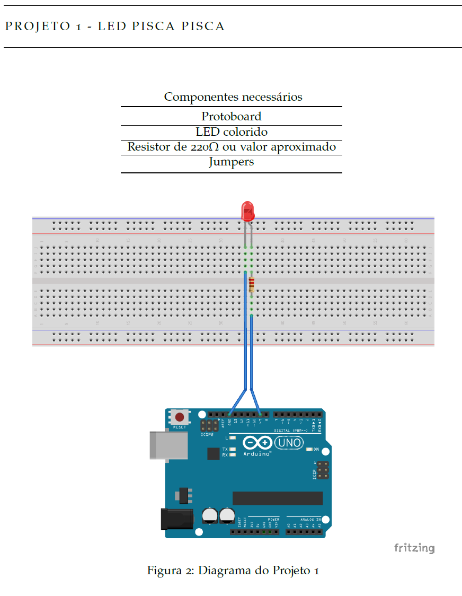
Figura 2: Diagrama de montagem do Projeto 1 no Fritzing (Protoboard, Resistor 220Ω e LED no pino 9).
Engenharia da Computação — Laboratório de Hardware e Circuitos Arduino
Componentes necessários: Protoboard, LED colorido, Resistor de 220Ω (ou valor aproximado), Jumpers.
Enunciado: Montar o circuito básico de temporização digital com acendimento e desligamento periódico de 1 segundo (1000ms). Expandir a lógica para controle de intervalo parametrizado e criação de semáforo de 3 tempos.
Link do Código:
Resolução Integrada (Código Fonte 2.1 & Desafios):
int ledPin = 9;
void setup() {
pinMode(ledPin, OUTPUT);
}
void loop() {
digitalWrite(ledPin, HIGH); // LED ligado
delay(1000); // intervalo de 1s
digitalWrite(ledPin, LOW); // LED desligado
delay(1000); // intervalo de 1s
}Média de 5 Notas via Monitor Serial
1-) Receber pela porta Serial do Arduino 5 notas (0 a 9), converter ASCII para inteiro, calcular a média em ponto flutuante e imprimir no Monitor Serial.
Link do Código:
Resolução:
int N1, N2, N3, N4, N5;
float M;
void setup() {
Serial.begin(9600);
}
void loop() {
Serial.println("Digite 5 notas (0 a 9):");
while (Serial.available() == 0); N1 = Serial.read() - '0';
while (Serial.available() == 0); N2 = Serial.read() - '0';
while (Serial.available() == 0); N3 = Serial.read() - '0';
while (Serial.available() == 0); N4 = Serial.read() - '0';
while (Serial.available() == 0); N5 = Serial.read() - '0';
M = (N1 + N2 + N3 + N4 + N5) / 5.0;
Serial.print("Média Calculada: ");
Serial.println(M);
while(1);
}Projeto 2 — LED Pisca Pisca com Delay Decremental
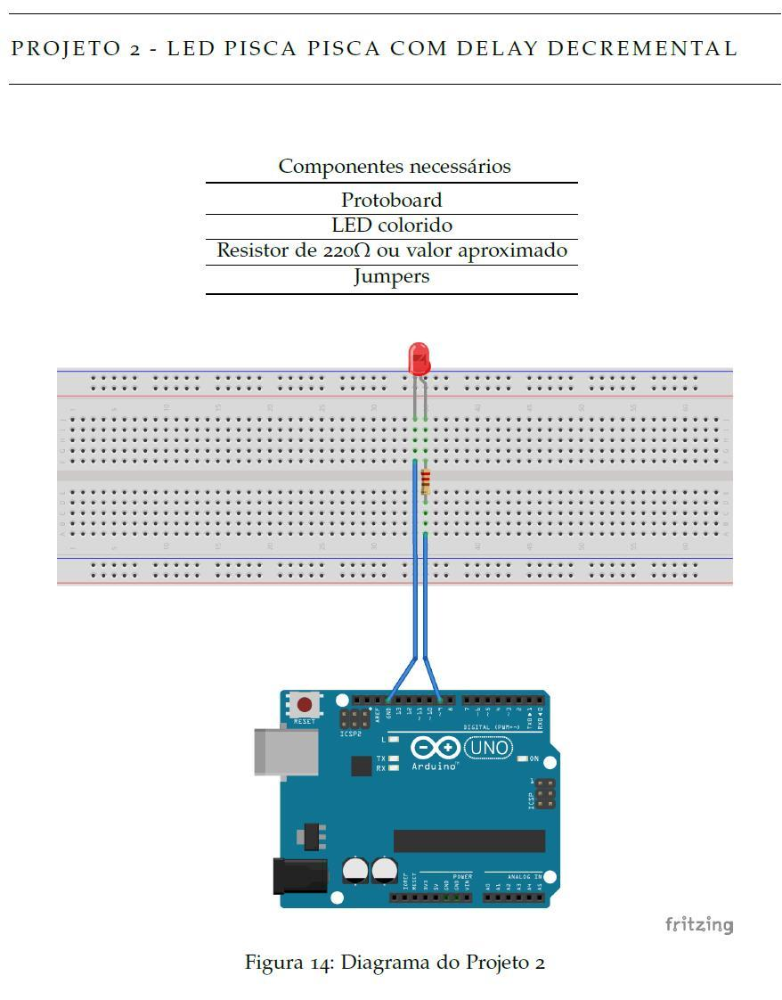
Figura 14: Diagrama de montagem do Projeto 2 no Fritzing com controle de temporização variável.
Engenharia da Computação — Laboratório de Hardware e Circuitos Arduino
Componentes necessários: Protoboard, LED colorido, Resistor de 220Ω, Jumpers.
Enunciado: Desenvolver rotina com laço condicional onde o intervalo de piscada inicia em 2000ms e reduz 200ms a cada ciclo. Ao atingir o limite mínimo (0ms), a variável reinicia em 2000ms.
Resolução:
int ledPin = 9;
int intervalo = 2000;
void setup() {
pinMode(ledPin, OUTPUT);
}
void loop() {
if (intervalo <= 0) {
intervalo = 2000;
}
digitalWrite(ledPin, HIGH);
delay(intervalo);
digitalWrite(ledPin, LOW);
delay(intervalo);
intervalo = intervalo - 200;
}Semáforo Automático Temporizado de 3 Tempos
2-) Controle de semáforo veicular padrão de três tempos nos pinos 8, 9 e 10 (Verde 5s, Amarelo 2s, Vermelho 5s).
Link do Código:
Resolução:
const int LED_VERMELHO = 10;
const int LED_AMARELO = 9;
const int LED_VERDE = 8;
void setup() {
pinMode(LED_VERMELHO, OUTPUT);
pinMode(LED_AMARELO, OUTPUT);
pinMode(LED_VERDE, OUTPUT);
}
void loop() {
digitalWrite(LED_VERDE, HIGH); delay(5000); digitalWrite(LED_VERDE, LOW);
digitalWrite(LED_AMARELO, HIGH); delay(2000); digitalWrite(LED_AMARELO, LOW);
digitalWrite(LED_VERMELHO, HIGH); delay(5000); digitalWrite(LED_VERMELHO, LOW);
}Projeto 3 — Luz Pulsante (Modulação PWM Incremental)
Engenharia da Computação — Laboratório de Hardware e Circuitos Arduino
Componentes necessários: Protoboard, LED colorido, Resistor de 220Ω, Jumpers.
Enunciado: Gerar efeito "fading / respiração" variando a intensidade do LED de 0 a 255 com incrementos de 1 unidade a cada 15ms através deanalogWrite().
Resolução:
int ledPin = 9;
int intensidade = 0;
void setup() {
pinMode(ledPin, OUTPUT);
}
void loop() {
if (intensidade == 255) {
intensidade = 0;
}
analogWrite(ledPin, intensidade);
delay(15);
intensidade = intensidade + 1;
}Semáforo de Veículos e Pedestres com Acionamento por Botão
3-) Cruzamento inteligente com semáforo de veículos e semáforo de pedestres acionado por botão com fase de alerta piscante.
Link do Código:
Resolução:
const int CAR_RED = 12, CAR_YELLOW = 11, CAR_GREEN = 10;
const int PED_RED = 9, PED_GREEN = 8, BUTTON = 2;
void setup() {
pinMode(CAR_RED, OUTPUT); pinMode(CAR_YELLOW, OUTPUT); pinMode(CAR_GREEN, OUTPUT);
pinMode(PED_RED, OUTPUT); pinMode(PED_GREEN, OUTPUT); pinMode(BUTTON, INPUT_PULLUP);
}
void loop() {
digitalWrite(CAR_GREEN, HIGH); digitalWrite(PED_RED, HIGH);
if (digitalRead(BUTTON) == LOW) {
delay(1000);
digitalWrite(CAR_GREEN, LOW); digitalWrite(CAR_YELLOW, HIGH); delay(2000);
digitalWrite(CAR_YELLOW, LOW); digitalWrite(CAR_RED, HIGH);
digitalWrite(PED_RED, LOW); digitalWrite(PED_GREEN, HIGH); delay(5000);
digitalWrite(PED_GREEN, LOW);
for (int i = 0; i < 5; i++) {
digitalWrite(PED_RED, HIGH); delay(250);
digitalWrite(PED_RED, LOW); delay(250);
}
}
}Projeto 4 — Meu Primeiro Botão (Pushbutton & Chave Tátil)
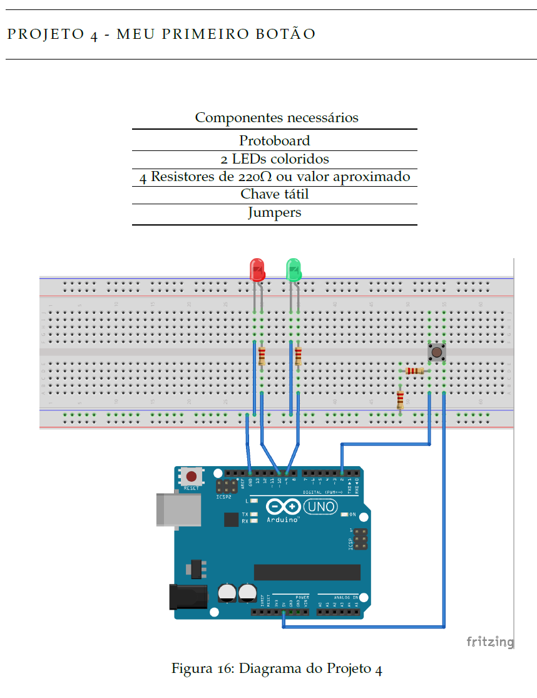
Figura 16: Diagrama do Projeto 4 com chave tátil no pino digital 2 e dois LEDs de status.
Engenharia da Computação — Laboratório de Hardware e Circuitos Arduino
Componentes necessários: Protoboard, 2 LEDs coloridos, 4 Resistores de 220Ω, Chave tátil, Jumpers.
Enunciado: Leitura de entrada digital com botão (pino 2 com pull-down). A cada acionamento, alternar os estados dos LEDs Verde e Vermelho.
Resolução:
int ledVerde = 9;
int ledVermelho = 10;
int pinoBotao = 2;
void setup() {
pinMode(ledVerde, OUTPUT);
pinMode(ledVermelho, OUTPUT);
pinMode(pinoBotao, INPUT);
digitalWrite(ledVerde, HIGH);
digitalWrite(ledVermelho, LOW);
}
void loop() {
int apertou = digitalRead(pinoBotao);
if (apertou == HIGH) {
digitalWrite(ledVerde, LOW);
digitalWrite(ledVermelho, HIGH);
delay(500);
digitalWrite(ledVerde, HIGH);
digitalWrite(ledVermelho, LOW);
}
}Controle de Brilho de LED com Modulação PWM e Potenciômetro
4-) Dimmer de LED via PWM lendo potenciômetro na porta analógica A0 (0-1023) e mapeando para saída PWM no pino 9 (0-255).
Link do Código:
Resolução:
const int PINO_POT = A0, PINO_LED = 9;
void setup() {
pinMode(PINO_LED, OUTPUT);
}
void loop() {
int valor_pot = analogRead(PINO_POT);
int valor_pwm = map(valor_pot, 0, 1023, 0, 255);
analogWrite(PINO_LED, valor_pwm);
delay(50);
}Projeto 5 — LED Controlado por Potenciômetro (Entrada Analógica A5)
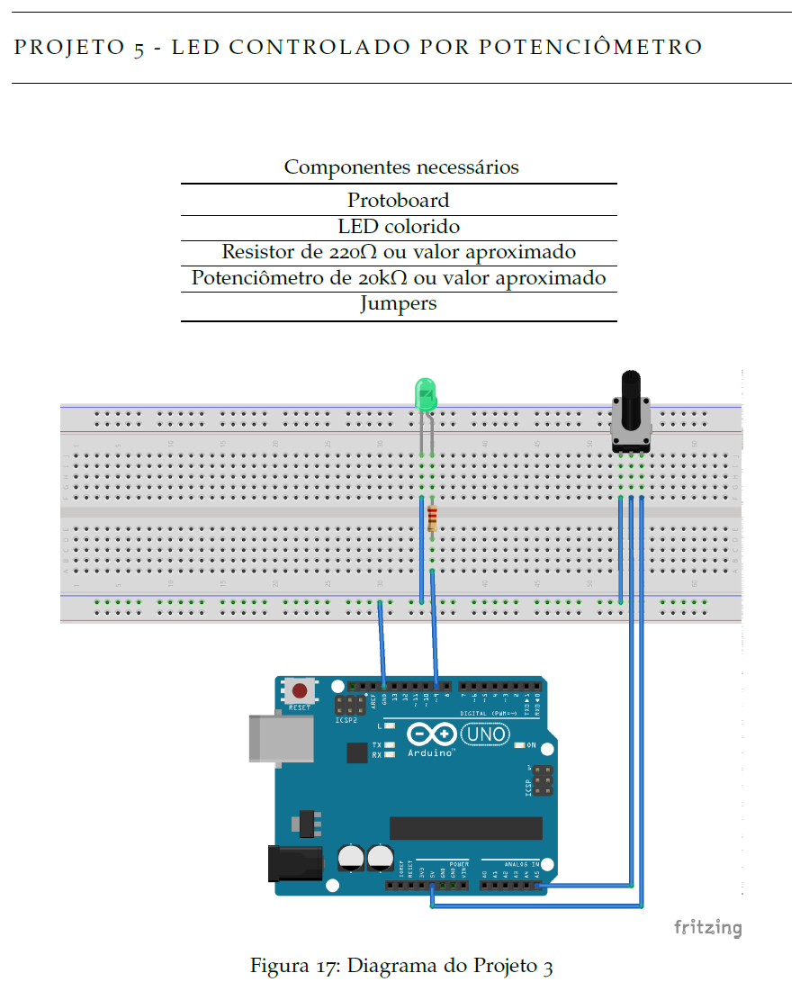
Figura 17: Diagrama do Projeto 5 com potenciômetro de 20kΩ na entrada analógica A5.
Engenharia da Computação — Laboratório de Hardware e Circuitos Arduino
Componentes necessários: Protoboard, LED colorido, Resistor de 220Ω, Potenciômetro de 20kΩ, Jumpers.
Enunciado: Ler tensão analógica de 0 a 5V (resolução 10 bits: 0 a 1023) na porta A5, mapear proporcionalmente para escala PWM de 8 bits (0 a 255) e modular o brilho do LED inversamente ou diretamente.
Resolução:
int ledPin = 9;
void setup() {
pinMode(ledPin, OUTPUT);
}
void loop() {
int leitura = analogRead(A5);
analogWrite(ledPin, 255 - (leitura / 4));
}Iluminação Pública Inteligente com Sensor LDR Fotoresistor
5-) Relé fotoelétrico lendo fotoresistor LDR em A1. Acionar lâmpada em D8 quando luminosidade for menor que o limiar (500).
Link do Código:
Resolução:
const int PINO_LDR = A1, PINO_RELE = 8, LIMIAR = 500;
void setup() {
pinMode(PINO_RELE, OUTPUT);
}
void loop() {
int luz = analogRead(PINO_LDR);
digitalWrite(PINO_RELE, luz < LIMIAR ? HIGH : LOW);
delay(1000);
}Projeto 6 — LED Inteligente com Sensor LDR
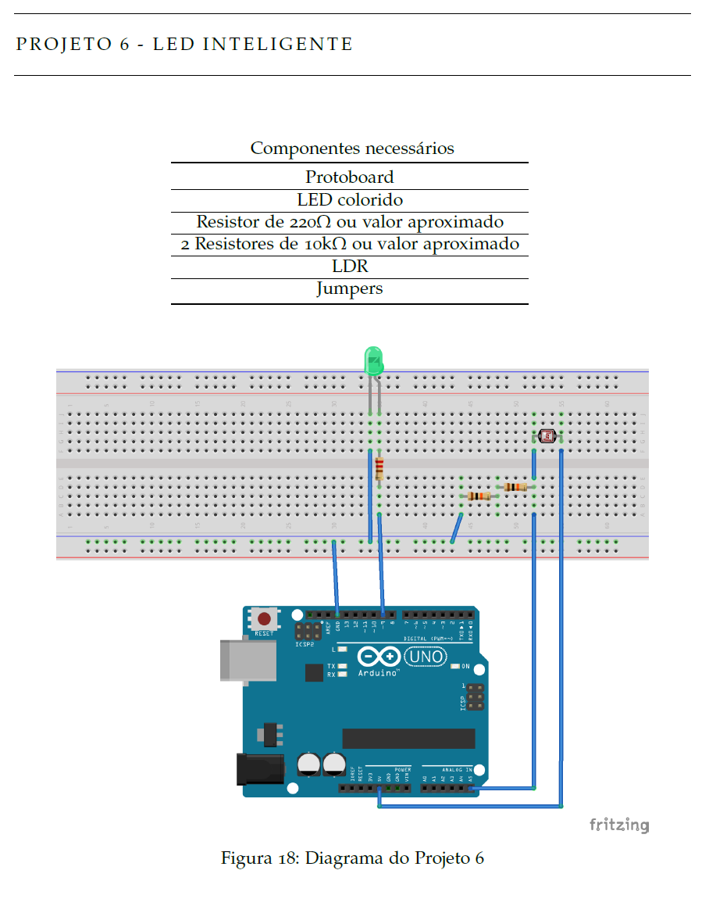
Figura 18: Diagrama do Projeto 6 com sensor LDR em divisor de tensão resistivo.
Engenharia da Computação — Laboratório de Hardware e Circuitos Arduino
Componentes necessários: Protoboard, LED colorido, Resistor de 220Ω, 2 Resistores de 10kΩ, LDR, Jumpers.
Enunciado: Construir poste de iluminação pública automática: quando a luminosidade ambiente cai (leitura LDR na porta A5 menor que limiar 500), acender o LED; caso contrário, mantê-lo apagado.
Resolução:
int ledPin = 9;
void setup() {
pinMode(ledPin, OUTPUT);
}
void loop() {
int leitura = analogRead(A5);
if (leitura < 500) {
digitalWrite(ledPin, HIGH);
} else {
digitalWrite(ledPin, LOW);
}
}Contador Decimal 0 a 9 em Display de 7 Segmentos
6-) Controle de display de 7 segmentos nos pinos digitais 2 a 8, realizando contagem progressiva de 0 a 9 com matriz booleana.
Link do Código:
Resolução:
const int pinos[7] = {2, 3, 4, 5, 6, 7, 8};
const byte digitos[10][7] = {
{1,1,1,1,1,1,0}, {0,1,1,0,0,0,0}, {1,1,0,1,1,0,1}, {1,1,1,1,0,0,1}, {0,1,1,0,0,1,1},
{1,0,1,1,0,1,1}, {1,0,1,1,1,1,1}, {1,1,1,0,0,0,0}, {1,1,1,1,1,1,1}, {1,1,1,1,0,1,1}
};
void setup() {
for (int i = 0; i < 7; i++) pinMode(pinos[i], OUTPUT);
}
void loop() {
for (int num = 0; num <= 9; num++) {
for (int seg = 0; seg < 7; seg++) digitalWrite(pinos[seg], digitos[num][seg]);
delay(1000);
}
}Projeto 7 — Calibrando o LED Inteligente via Monitor Serial
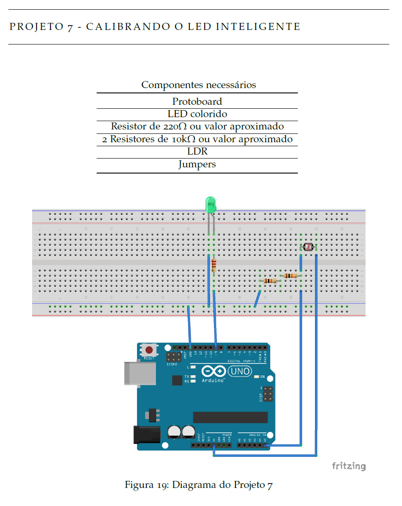
Figura 19: Diagrama do Projeto 7 com transmissão de dados do LDR via Serial Monitor.
Engenharia da Computação — Laboratório de Hardware e Circuitos Arduino
Componentes necessários: Protoboard, LED, Resistor 220Ω, 2 Resistores 10kΩ, LDR, Jumpers.
Enunciado: Enviar leituras contínuas da porta analógica A5 para o computador a 9600 baud viaSerial.println(), permitindo calibrar com exatidão o ponto de corte do acendimento do LED conforme as condições de luz da sala.
Resolução:
int ledPin = 9;
void setup() {
pinMode(ledPin, OUTPUT);
Serial.begin(9600);
}
void loop() {
int leitura = analogRead(A5);
Serial.println(leitura);
if (leitura < 500) {
digitalWrite(ledPin, HIGH);
} else {
digitalWrite(ledPin, LOW);
}
delay(100);
}Sensor Ultrassônico HC-SR04 de Distância com Alarme Buzzer
7-) Radar de proximidade medindo distância via ultrassom (Trig D12, Echo D13). Alarme sonoro contínuo no buzzer (D11) quando distância <= 20 cm.
Link do Código:
Resolução:
const int PIN_TRIG = 12, PIN_ECHO = 13, PIN_BUZZER = 11;
void setup() {
pinMode(PIN_TRIG, OUTPUT); pinMode(PIN_ECHO, INPUT); pinMode(PIN_BUZZER, OUTPUT);
}
void loop() {
digitalWrite(PIN_TRIG, LOW); delayMicroseconds(2);
digitalWrite(PIN_TRIG, HIGH); delayMicroseconds(10); digitalWrite(PIN_TRIG, LOW);
long duracao = pulseIn(PIN_ECHO, HIGH);
float dist = (duracao * 0.0343) / 2.0;
if (dist > 0 && dist <= 20.0) tone(PIN_BUZZER, 1000);
else noTone(PIN_BUZZER);
delay(100);
}Projeto 8 — LEDs Controlados pelo Teclado via Porta Serial
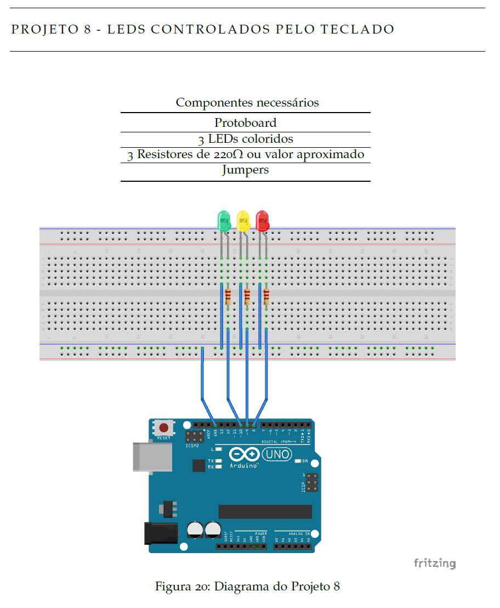
Figura 20: Diagrama do Projeto 8 com acionamento seletivo de 3 LEDs nos pinos 8, 9 e 10.
Engenharia da Computação — Laboratório de Hardware e Circuitos Arduino
Componentes necessários: Protoboard, 3 LEDs coloridos, 3 Resistores de 220Ω, Jumpers.
Enunciado: Receber comandos numéricos via terminal serial do computador (1,2ou3). Acionar apenas o LED correspondente digitado pelo operador, mantendo os demais apagados através deSerial.parseInt().
Resolução:
int ledUm = 10;
int ledDois = 9;
int ledTres = 8;
int ledAtivo;
void setup() {
pinMode(ledUm, OUTPUT);
pinMode(ledDois, OUTPUT);
pinMode(ledTres, OUTPUT);
Serial.begin(9600);
}
void loop() {
if (Serial.available() > 0) {
ledAtivo = Serial.parseInt();
if (ledAtivo == 1) {
digitalWrite(ledUm, HIGH);
digitalWrite(ledDois, LOW);
digitalWrite(ledTres, LOW);
} else if (ledAtivo == 2) {
digitalWrite(ledUm, LOW);
digitalWrite(ledDois, HIGH);
digitalWrite(ledTres, LOW);
} else if (ledAtivo == 3) {
digitalWrite(ledUm, LOW);
digitalWrite(ledDois, LOW);
digitalWrite(ledTres, HIGH);
}
}
}Automação de Circuitos e Controle de LEDs com Arduino
8-) Controle e acionamento de atuadores e sinalizadores luminosos via pinos digitais do Arduino em C++.
Link do Código:
Resolução:
void setup() {
pinMode(LED_BUILTIN, OUTPUT);
}
void loop() {
digitalWrite(LED_BUILTIN, HIGH);
delay(500);
digitalWrite(LED_BUILTIN, LOW);
delay(500);
}Repositório mantido por Guilherme (@Guimemee) • Bacharelado em Engenharia da Computação FIAP.